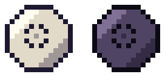
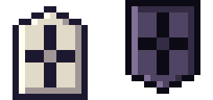
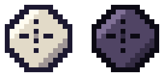
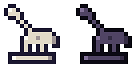
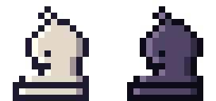
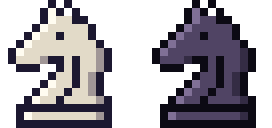

Llegan piezas del xiangqi, el shogi, el janggi, Tamerlán y el ajedrez de Capablanca, y la cebra del ajedrez de fantasía. Y para no perderse entre tanta pieza, el Almanaque: una ficha de cada pieza y cada carta, con una animación de cómo se mueve.
Piezas nuevas






- Caballo del xiangqi: salta como el caballo, pero cojea: si la casilla recta de al lado está ocupada, no puede saltar por ese lado.
- Torre y alfil del shogi: se mueven como la torre y el alfil. Al llegar al fondo se convierten en dragón y caballo dragón.
- Cañón del janggi: en línea recta, se mueve y captura solo saltando exactamente una pieza.
- Jirafa: un paso en diagonal y luego al menos tres casillas en línea recta, hacia afuera.
- Arzobispo y canciller: alfil y caballo a la vez; torre y caballo a la vez.
- Cebra: salta 3 casillas en una dirección y 2 en la otra, por encima de lo que haya. Su carta cambia una pieza menor por la cebra y un peón.
- Además: elefante y soldado del xiangqi, elefante y soldado del janggi, y príncipe y espía de Tamerlán. Los peones del makruk y del shatranj ya están en el Almanaque, pero llegan más adelante.
Llegan a tu ejército por cartas de conversión en la tienda.
Mejoras nuevas
- Paso de soldado, Mirada del general, Disparo de cañón, Zona de promoción y los saltos de elefante y de máquina de guerra.
- Casilla de río: se pisa, pero no se atraviesa.
- Dos rivales nuevos: el Señor del río y el Timúrida.
El Almanaque
Desde el inicio del juego. Cada pieza dice de qué juego viene, cómo se mueve y cómo se consigue.
- Cada juego muestra su ejército completo. Las piezas que comparte con otro juego llevan su nombre local: en el makruk, el rey es el khun y la torre, la rua.
- En la tienda y en la partida, el nombre de cada pieza en los textos es un enlace: abre una ficha flotante con su animación, y desde ahí el Almanaque, sin salir de donde estás.
- Las cartas de conversión muestran cómo se mueve la pieza que recibes.
Otros cambios
- En dificultad Aprendiz puedes deshacer tus jugadas cuantas veces quieras mientras la partida sigue.